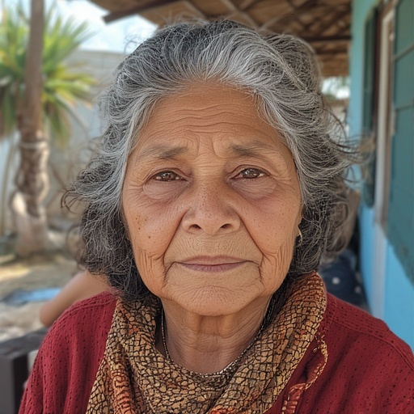
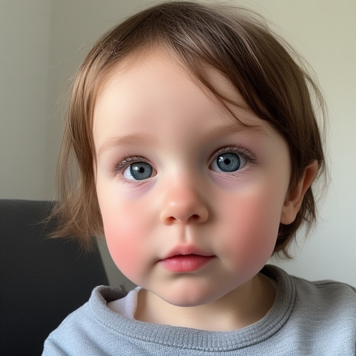

Adivinando edades
Bienvenidos a la actividad ‘Adivinando edades’
A continuación encontrarás las estimaciones de edad de todos los estudiantes de seminarios de cuanti.
¿Qué edad tiene CH?
Mostrar gráficos de todas las estimaciones
¿Qué edad tiene PM?
Mostrar gráficos de todas las estimaciones
¿Qué edad tiene LI?
Mostrar gráficos de todas las estimaciones
¿Qué edad tiene MM?
Mostrar gráficos de todas las estimaciones
¿Qué edad tiene FV?
Mostrar gráficos de todas las estimaciones
¿Qué edad tiene GH?
Mostrar gráficos de todas las estimaciones
¿Qué edad tiene PP?
Mostrar gráficos de todas las estimaciones
¿Qué edad tiene YG?
Mostrar gráficos de todas las estimaciones
¿Qué edad tiene OR?

Mostrar gráficos de todas las estimaciones
¿Qué edad tiene TR?
Mostrar gráficos de todas las estimaciones
¿Qué edad tiene BA?
